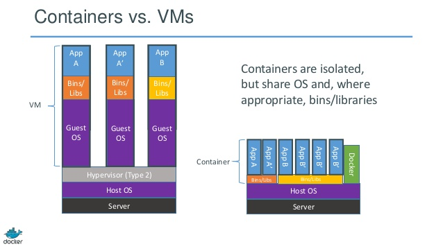
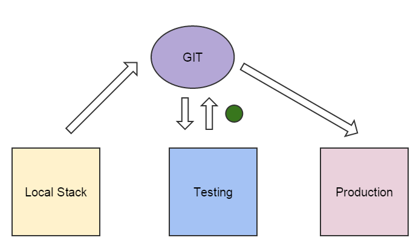
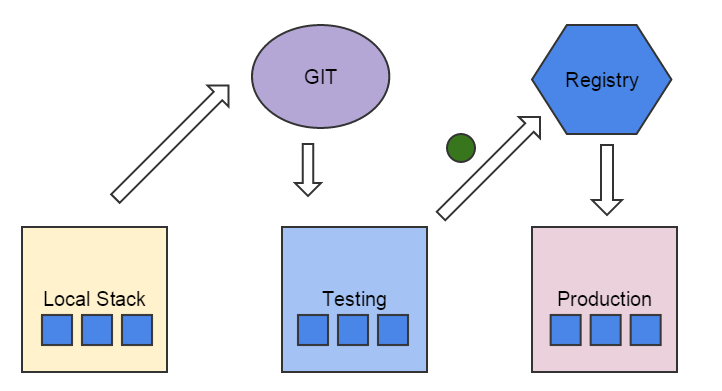

Hello Docker
Nick Selvaggio / www.segosolutions.com

A little about me.
A little about you.
So what is Docker?
"Docker is an open platform for developers and sysadmins to build, ship, and run distributed applications."
-via Docker.com
Ok what does that mean?
Fundamentally, a usability layer on top of Linux Containers (written in Go)

Some History
- Started as internal project at DotCloud
- Open Sourced in March 2013
- Has large vibrant community
- 1.0 released in June 2014
- Current release guidance docs:
https://docs.docker.com/install/
Containers?
A way to isolate processes on a host machine without the heavy overhead of a Virtual Machine.Containers vs Virtual Machines

So why should we care?
As developers?
- Develop with production configuration and environments
- Make it easier to share your application and its surrounding software stack in a light weight fashion
- Much easier and less stressful trying new technologies.
Current Workflow
Local Stack Setup --> Pushes to GIT --> Testing Server Runs tests --> If passed code deployed to production
Docker Workflow
Local Containerized Stack Setup --> Pushes to GIT --> Testing Server Builds image and tests--> Image is pushed to registry --> Built Image deployed to production
As sysadmins?
- Simple tools to define your containers using Dockerfiles. Dont have to learn a new syntax like Puppet or Chef.
- Creating test environments and the general portabilty of your infrastructure increases
- Greater flexibility with scaling applications across different geographical locations and cloud service providers
How do we use Docker?
- It can be installed on all major platforms.
- For Windows and Mac it runs in its own VM
- The Docker daemon can be accessed via a command line tool OR via the RESTful API.
Images
Used to store your app
Containers
Used to run your app
Ok enough talk, lets demo!
Further exploration:
Questions?
Code and slides available at:
https://github.com/nickgs